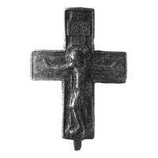
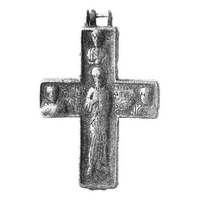

Catalog › CE-0876 · KOR2003-II.2.1.19
Encolpion întreg cu tip nou de Răstignire pe față, sfânt în picioare cu Constantin, Elena și Gheorghe pe revers
sec. XII (după model); XIII–XIV (?) după redacție (1101–1400) · loc necunoscut · Muzeul de Stat Ermitaj, Sankt-Petersburg, Secția de istorie a culturii ruse (OIRK), inv. ЭРП-342
double-sided reliquary cross (enkolpion), aramă; c. XII (după model); XIII–XIV (?) după redacție (1101–1400); find spot unknown; kept at Muzeul de Stat Ermitaj, Sankt-Petersburg, Secția de istorie a culturii ruse (OIRK).




Identificare
- Categorie
- Encolpion bivalv (relicvar)
- Material
- Aramă
- Tehnică
- Turnare în relief; Gravare (incizie)
- Stare
- Întreagă
Iconografie
- Descriere avers
- Valva de față cu un tip nou de Răstignire, atribuit aparent sfârșitului sec. XIII–XIV, dar păstrând unele elemente ale modelului inițial. Inscripții adâncite pe titulus: ІС ХС НН КА.
- Revers
- Sf. Gheorghe
- Descriere revers
- Imagini standard ale unui sfânt în picioare, pe laturi Constantin și Elena, sus Sf. Gheorghe. În încrucișare, inscripție pe mai multe rânduri, neclară.
- Inscripții
- ІС ХС НН КА
- Limba
- Slavonă
Datare și atribuire
- Datare
- sec. XII (după model); XIII–XIV (?) după redacție (1101–1400)
- Centru
- Necunoscut
- Tipologie
- Korzukhina–Peskova 2003, tip II 2 1
Descoperire
- Context
- Colecție (fără context)
Păstrare și referințe
- Colecție
- Muzeul de Stat Ermitaj, Sankt-Petersburg, Secția de istorie a culturii ruse (OIRK)
- Nr. inventar
- ЭРП-342
- Bibliografie
- G. F. Korzukhina, A. A. Peskova, Древнерусские энколпионы. Нагрудные кресты-реликварии XI–XIII вв., Sankt-Petersburg, 2003 [Korzukhina–Peskova 2003], p. 86, cat. nr. II 2 1/19, reprodusă la Табл. 38 (planșe, p. 280). Bibliografie citată în sursă: Тысячелетие, 204, 387, № 271.
- Figura
- Табл. 38
- Planșe
- Korzukhina–Peskova 2003, Табл. 38 (planșă fără paginație proprie în PDF; p. 280 tipărită)
- Observații
- Datare după Peskova: sec. XII (după model); XIII–XIV (?) după redacție. Proveniență în colecție: intrat în 1950. Datat „după model” XII; datarea XIII–XIV vv ? aparține redacției. Foto după Tysiacheletie. Lectura inscripțiilor de verificat pe original. Coordonate: nu sunt date în sursă.
Citare: Corpus Encolpiorum, CE-0876, Encolpion întreg cu tip nou de Răstignire pe față, sfânt în picioare cu Constantin, Elena și Gheorghe pe revers, https://vitaliejosanu1979-ux.github.io/primul-meu-proiect/piese/KOR2003-II.2.1.19/ (accesat 2026-10-17).